Vencedores
Melhor Roteiro – 152 A/B, de Daniel Jaber
Melhor Diálogo – PRAZO DE VALIDADE, de Lucas Delfin
Melhor Personagem – A MULHER AOS MEUS PÉS, de Diego dos Anjos
Prêmio ROTA/CABÍRIA de Melhor Protagonista Feminina - A CASA É NOSSA, roteiro de Natália Borges Martins
Descrição
Parabéns aos vencedores do Concurso de Roteiros de Curtas
Melhor Roteiro
DIEGO ALEXANDRE DA SILVA
“Vida Boneca”
Melhor Personagem
FERNANDA ZANCOPÉ e STEFANI MOTA
“Loucuras de Amor, Telemensagens”
Melhor Diálogo
IEDA LAGOS
“Flor e o Jequitibá”
Menção Honrosa
CAUÊ PROCÓPIO
“O Querer”
Prêmio ROTA/CABÍRIA
Melhor Protagonista Feminina
VANISE CARNEIRO
“Tudo que Cresce e Voa”
Roteirista Homenageada do Ano
MELANIE DIMANTAS
Parabéns aos finalistas do Concurso de Roteiros:
MELHOR ROTEIRO
- Diego Alexandre da Silva (Rio de Janeiro/RJ) - VIDA BONECA
- Kimberly Palermo Eiras (Nova Iguaçu/RJ) - O VULCÃO
- Maria Clara Gomes Bruno (Nova Iguaçu/RJ) - ONDE TODA MULHER AMARIA SE AFOGAR
- Paulinho Uda (São Paulo/SP) - O FANTASMA DO RETROVISOR
- Soraya Helena (Ribeirão Preto/SP) - PIRANHA, EU TE AMO
MELHOR PERSONAGEM
- Bruno Galindo e Mayara Pereira de Souza (São Paulo/SP) - AYAN
- Fernanda Zancopé e Stefani Mota (São Paulo/SP) - LOUCURA DE AMOR, TELEMENSAGENS
- Guilherme de Souza Demaria (São Paulo/SP) - DODO
- Kimberly Palermo Eiras (Nova Iguaçu/RJ) - O VULCÃO
- Leon Barbero (São Paulo/SP) - DELAY
MELHOR DIÁLOGO
- Cauê Procópio (São Paulo/SP) - O QUERER
- Ieda Lagos (Belo Horizonte/MG) - FLOR E O JEQUITIBÁ
- Kimberly Palermo Eiras (Nova Iguaçu/RJ) - O VULCÃO
- Leonardo Valverde (Salvador/BA) - BICHA, VÁ FAZER UMA TERAPIA
- Soraya Helena (Ribeirão Preto/SP) - PIRANHA, EU TE AMO
MELHOR PROTAGONISTA FEMININA (Prêmio ROTA/CABÍRIA)
- Luísa Prado Betti Guarnieri (São Paulo/SP) - ESTRELAS DE UM SÓ HIT
- Tábata Clarissa de Morais (Recife/PE) - QUATRO PONTES
- Vanise Carneiro (São Paulo/SP) - TUDO O QUE CRESCE E VOA
Parabéns aos semifinalistas do Concurso de Roteiros:
MELHOR ROTEIRO
Cristiane Teotônio Moioli (São Paulo/SP) - NOSSA ÁRVORE
Diego Alexandre da Silva (Rio de Janeiro/RJ) - VIDA BONECA
Guss de Lucca (Campinas/SP) - O DIABO A QUATRO
Luciana Leitão Santos (Salvador/BA) - TURQUESA
Maria Clara Gomes Bruno (Nova Iguaçu/RJ) - ONDE TODA MULHER AMARIA SE AFOGAR
Maritza Muniz dos Santos (Curitiba/PR) - PANELA DE PRESSÃO
Paulinho Uda (São Paulo/SP) - O FANTASMA DO RETROVISOR
Pedro Bini (São Paulo/SP) - BRINCADEIRA
Ricardo Garcia (São Paulo/SP) - AMEI TE VER
Soraya Helena (Ribeirão Preto/SP) - PIRANHA, EU TE AMO
MELHOR PERSONAGEM
Alice Proença (Montes Claros/MG) e Arthur Quadra (Belo Horizonte/MG) - GRITAR É SOBREVIVER!
Bruno Galindo e Mayara Pereira de Souza (São Paulo/SP) - AYAN
Eduardo Resing (São Paulo/SP) - A MÃO COBRINDO OS OLHOS
Fernanda Zancopé e Stefani Mota (São Paulo/SP) - LOUCURA DE AMOR, TELEMENSAGENS
Guilherme de Souza Demaria (São Paulo/SP) - DODO
Ieda Lagos (Belo Horizonte/MG) - FLOR E O JEQUITIBÁ
Leon Barbero (São Paulo/SP) - DELAY
Maritza Muniz dos Santos (Curitiba/PR) - PANELA DE PRESSÃO
Soraya Helena (Ribeirão Preto/SP) - PIRANHA, EU TE AMO
Victor Germano (Recife/PE) - PASSA O TEMPO E MATA A FOME
MELHOR DIÁLOGO
Álvaro Oliveira Paixão (Rio de Janeiro/RJ) - O GOLPE
Cauê Procópio (São Paulo/SP) - O QUERER
Cauê Procópio (São Paulo/SP) - ORGIA, GUERRA E PAZ
Eduardo Resing (São Paulo/SP) - A MÃO COBRINDO OS OLHOS
Ieda Lagos (Belo Horizonte/MG) - FLOR E O JEQUITIBÁ
Kimberly Palermo Eiras (Nova Iguaçu/RJ) - O VULCÃO
Leonardo Valverde (Salvador/BA) - BICHA, VÁ FAZER UMA TERAPIA
Paulinho Uda (São Paulo/SP) - O FANTASMA DO RETROVISOR
Soraya Helena (Ribeirão Preto/SP) - PIRANHA, EU TE AMO
Thaís Mandarino (Rio de Janeiro/RJ) - ESTUDO PARA QUATRO MÃOS
MELHOR PROTAGONISTA FEMININA (Prêmio Cabíria)
Aline Pinheiro da Cunha e Mariana Polo Garotti (São Paulo/SP) - SELMA E LUIZA
Ana Laryssa Gomes Lopes (Brasília/DF) - A PRIMEIRA DANÇA DO RESTO DE NOSSAS VIDAS
Fernanda Zancopé e Stefani Mota (São Paulo/SP) - LOUCURA DE AMOR, TELEMENSAGENS
Gabrielly Oliveira de Souza e Patrick Hanser (São Paulo/SP) - CICATRIZ
Geovana Pimentel (Recife/PE) - UMA HISTÓRIA SOBRE AMOR
Luísa Prado Betti Guarnieri (São Paulo/SP) - ESTRELAS DE UM SÓ HIT
Selma Maria Kuasne (São Paulo/SP) e Pedro Vargas Cunha (Cotia/SP) - A MENINA CHEIA DE CORES
Soraya Helena (Ribeirão Preto/SP) - PIRANHA, EU TE AMO
Tábata Clarissa de Morais (Recife/PE) - QUATRO PONTES
Vanise Carneiro (São Paulo/SP) - TUDO O QUE CRESCE E VOA
Governo Federal, Governo do Estado do Rio de Janeiro, Secretaria de Estado de Cultura e Economia Criativa do Rio de Janeiro, através da Lei Aldir Blanc apresentam o V ROTA – Festival de Roteiro do Audiovisual, selecionado pelo Edital de Chamada Emergencial de Premiação nº 04/2020 “FOMENTA FESTIVAL RJ”, que dispõe sobre a premiação financeira de festivais realizados no Estado do Rio de Janeiro. Com isto, a produção do ROTA tem o prazer de oferecer premiação em dinheiro, conforme o Regulamento abaixo:
Inscrições de 20 de janeiro a 03 de fevereiro de 2021
LEIA TODO O REGULAMENTO ANTES DE ENVIAR SUA INSCRIÇÃO
O Concurso de Roteiro de Curtas-metragens tem o objetivo de promover, através de premiação, roteiros de curtas de ficção inscritos por estudantes e iniciantes brasileiros e maiores de idade e, assim, abrir portas para sua eventual realização.
Os roteiros concorrerão nas seguintes categorias:
-melhor roteiro,
-melhor personagem,
-melhor diálogo,
-melhor protagonista feminina (certificado Cabíria).
Os roteiros serão avaliados em duas etapas:
Etapa 01: vinte curadores selecionarão até 30 roteiros indicados para as 3 categorias do prêmio: melhor roteiro, melhor personagem e melhor diálogo, e as indicadas para o Prêmio ROTA/Cabíria de Melhor Protagonista Feminina.
Etapa 02: cinco jurados do ROTA escolherão os vencedores do concurso nas 3 categorias. E os jurados do Prêmio Cabíria escolherão a vencedora na categoria de Melhor Protagonista Feminina.
Tanto a curadoria quanto o júri do concurso serão compostos por profissionais reconhecidos da área. Premiação: além de troféus, o Concurso de Roteiros de Curtas do V ROTA premiará seus vencedores com consultorias, oficinas e traduções oferecidas pelos parceiros do Festival e uma premiação no valor de R$1.000,00 (mil reais), sujeito à retenção de impostos, para o vencedor da categoria Melhor Roteiro.
Para a edição do V ROTA são esperadas novas parcerias e premiações.
Dúvidas e sugestões? Envie email para rotaconcurso2021@gmail.com.
Convidados
-
ADRIANA JUNGBLUTH
Curadora
Roteirista e Escritora, natural de Jundiaí - SP. Estudou Roteiro na EICTV em Cuba, na AIC-RIO e PUC-RIO. Foi curadora do Concurso de Roteiros de Curta do ROTA em 2019. Seu projeto de longa-metragem infantil foi selecionado pelo Edital PROAC de desenvolvimento de roteiro. Escreveu e produziu o curta metragem “Maybe just the plant”, filmado em 2018 em Berlim, na Alemanha, e exibido no festival Zeitimpuls Shortfilm em Viena. Atualmente é Pós-graduanda em Cinema na Faculdade de Belas Artes de SP. Tem um livro publicado (Uma Lenda Japonesa) e participou de duas antologias em 2020.
-
ANA DO CARMO
Curadora
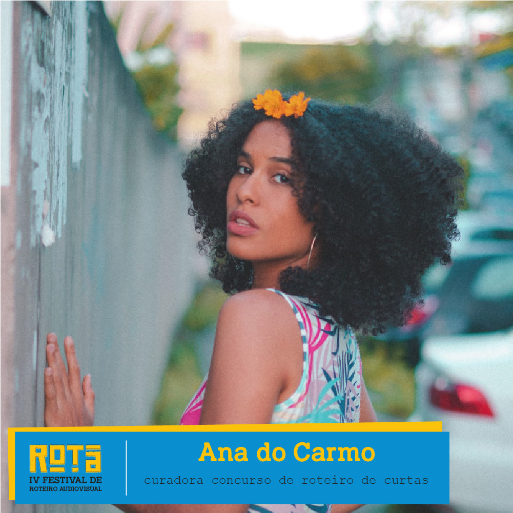 Ana do Carmo é diretora e roteirista baiana, co-fundadora da Saturnema Filmes, integrante da Gran Maître Filmes, coordenadora audiovisual do projeto Lendo Mulheres Negras, associada à APAN, membra do Black Femme Supremacy Film Festival (EUA) e membra da OBS - Organization of Black Screenwriters (EUA). Dirigiu e roteirizou 7 curtas selecionados para festivais nacionais e internacionais, dentre eles a Short Film Corner do Festival de Cannes; foi vencedora do Festival do Minuto; finalista em 5 categorias no Fest Cine Pedra Azul; semi-finalista no Dumbo Film Festival (EUA); premiada pelo edital Arte Como Respiro do Itaú Cultural; selecionada para as turnês de curta-metragem Taste Test 2020 (EUA) e Femme Frontera Filmmaker Showcase (EUA); e selecionada para os labs de roteiro PanLab 2019 (BA), GranLab 2020 (BA), Usina do Drama 2020 (BA), Sundance Collab (EUA) e Frapa 2020 (RS), onde é finalista com seu primeiro roteiro de longa metragem.
-
ARIEL L. DIBERNACI
Curador
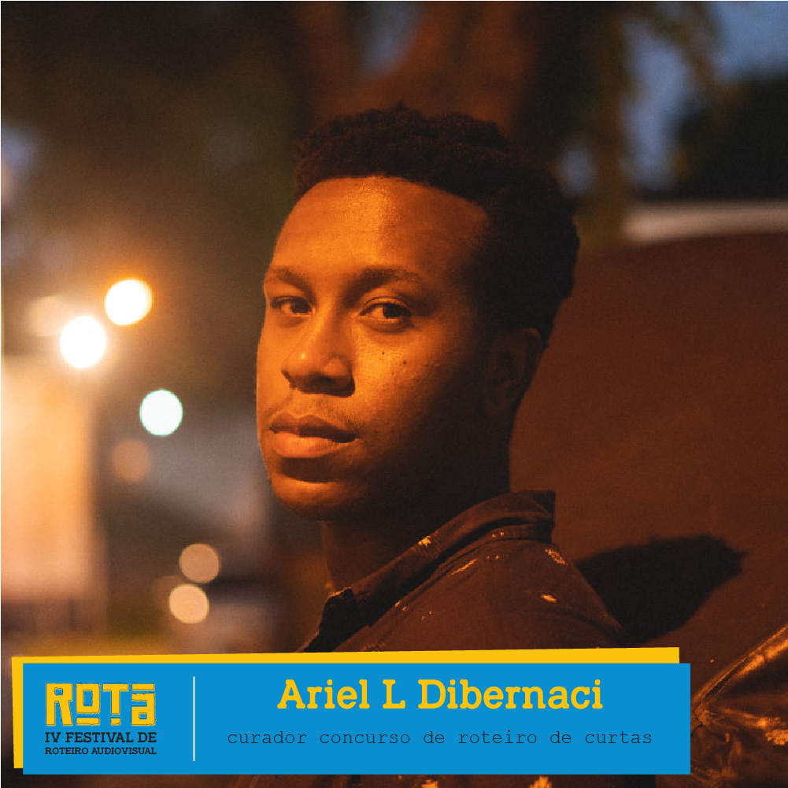 Diretor, roteirista e oficineiro baiano, graduado em Produção em Tecnologia Audiovisual pelo Centro Universitário Jorge Amado, co-fundador da Saturnema Filmes e integrante da Gran Maître Filmes. Dirigiu e roteirizou os curtas-metragens: Cantos dessa Cidade (2016), Lobo do Homem (2017); Exposição (2017); Objeto de Cena (2017); Ponta de Lança (2017); De Amando a Paulo Isidoro (2018); A 7 Tragos do Chão (2019) e Tubarão de Água Doce (2020). Foi oficineiro na II Mostra Itinerante de Cinemas Negros Mohamed Bamba e na III Mostra Sesc de Cinema; foi finalista no concurso DirecTV Cinema+ da SKY; semifinalista do Dumbo Film Festival (Nova York); vencedor do Festival do Minuto; é co-roteirista da série "Fúcsia", selecionada para o laboratório de roteiro Usina do Drama 2020 (BA); e é co-roteirista do roteiro de curta-metragem "Eu, o Homem de Barro", selecionado para o Crafting Your Short Film - Sundance Collab (EUA). Atualmente está desenvolvendo seu primeiro roteiro de longa-metragem. Ariel também é diretor de fotografia e montador, tendo atuado em mais de 30 produções no cenário independente baiano.
-
CARLOS KAMARA
Curador
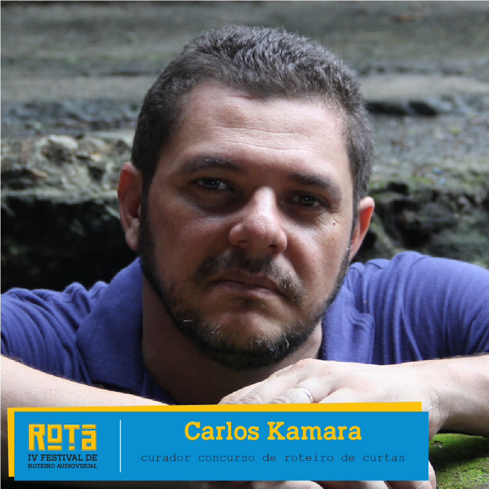 Nascido em Orobó, cidade do agreste pernambucano, formado em Letras, começou sua carreira cinematográfica a partir de 2011, participando em produções locais do estado de Pernambuco, como o longa metragem O PERFUME DELAS, de Jorge de Souza. Kamara é um dos impulsionadores do audiovisual no agreste pernambucano e já soma em seu currículo seis curtas metragens, dentre eles com destaque para SOB O DELÍRIO DE AGOSTO, co-dirigido por Karla Ferreira, que ganhou 14 prêmios em festivais. Além de roteirista e cineasta, é produtor, curador e coordenador de duas mostras de cinema: OROCINE - MOSTRA OROBÓ DE CINEMA e PERIFÉRICA - MOSTRA DE CINEMA DE CAMARAGIBE. Ele faz parte do Setorial Audiovisual do Agreste e foi membro do Conselho Consultivo do Audiovisual de Pernambuco. Filmes: Toque (fic.2013) - direção, O Quarto Branco (fic.2016) - roteiro e direção, Arena (doc.2017) - roteiro e direção, Sob o Delírio de Agosto (fic.2013) - roteiro e direção, Alvorada (doc.2019) - roteiro e direção e O Quarto Negro (fic.2019) - roteiro e direção.
-
CAROL SANTOIAN
Curadora
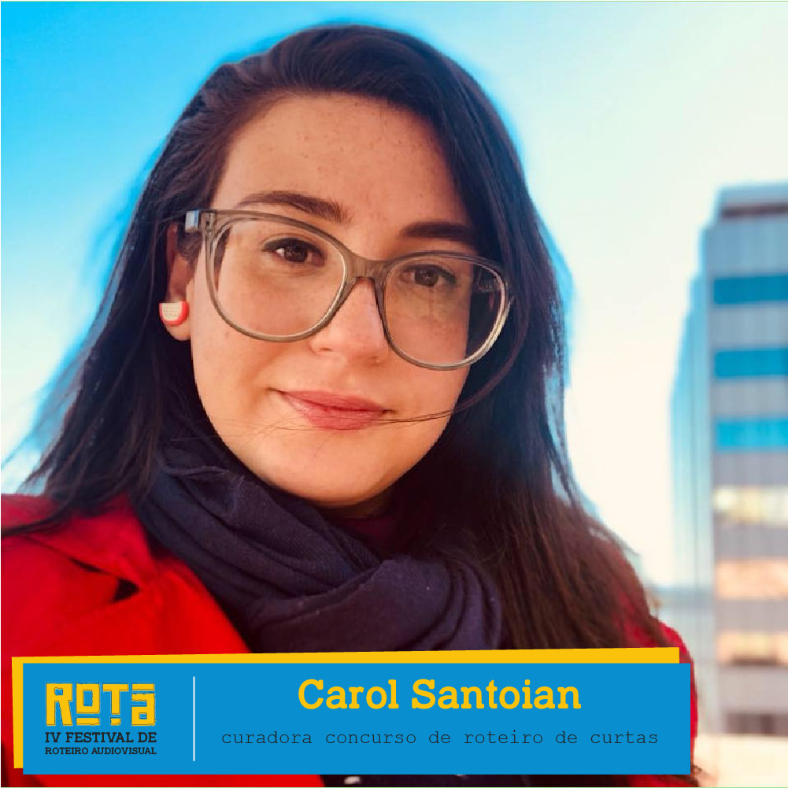 Roteirista formada pela Escola de Cinema Darcy Ribeiro, pós-graduada em Roteiro para Cinema, TV, WEB e Multiplataformas pela UVA e Bacharel em História pela Universidade Federal do Estado do Rio de Janeiro (UNIRIO). Na televisão, trabalhou como assistente de produção do programa Cara & Coroa da TV Brasil e como editora de imagem nos principais jornais da TV Globo. Roteirizou, produziu e editou o curta doc “Os Paraíba da Feira” (2018). Atualmente trabalha com criação de conteúdo para internet e mantém um canal no Youtube especializado em narrativa audiovisual.
-
CAROL VILAMARO
Curadora
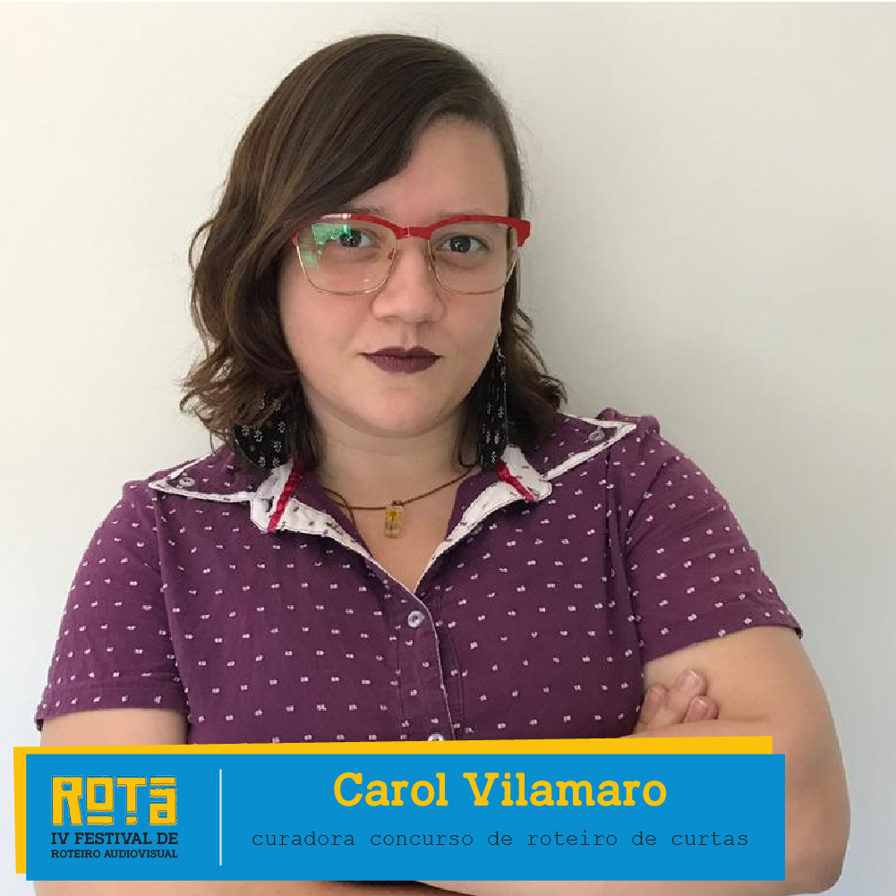 Nascida e criada em Nova Iguaçu/RJ, Bacharel em Jornalismo formada pela Faculdade Pinheiro Guimarães, com especialização em cinema (Escola de Cinema Darcy Ribeiro), produção audiovisual (Escola Cinema Nosso) e fotografia (SENAC). Já foi diretora, produtora, creative creator, colaboradora e fotógrafa de diversos filmes e eventos. É uma das realizadoras do movimento #BaixadaFilma, um movimento que começou com um manifesto pela territorialização dos orçamentos no Audiovisual para a Baixada Fluminense. Criadora da Laranja Vulcânica, um selo de produções independentes da Baixada Fluminense. Atualmente trabalha com tradução e legendagem para produtos audiovisuais como filmes, videos e peças institucionais. Seu trabalho criativo também gira em torno do feminino na arte enquanto resistência e construção de afetos com o território da Baixada Fluminense. Sempre gostou de escrever, fotografar e contar histórias. Seu trabalho é 100% autoral e não acredita em nada que seja feito sem afeto.
-
E. M. Z. CAMARGO
Curador
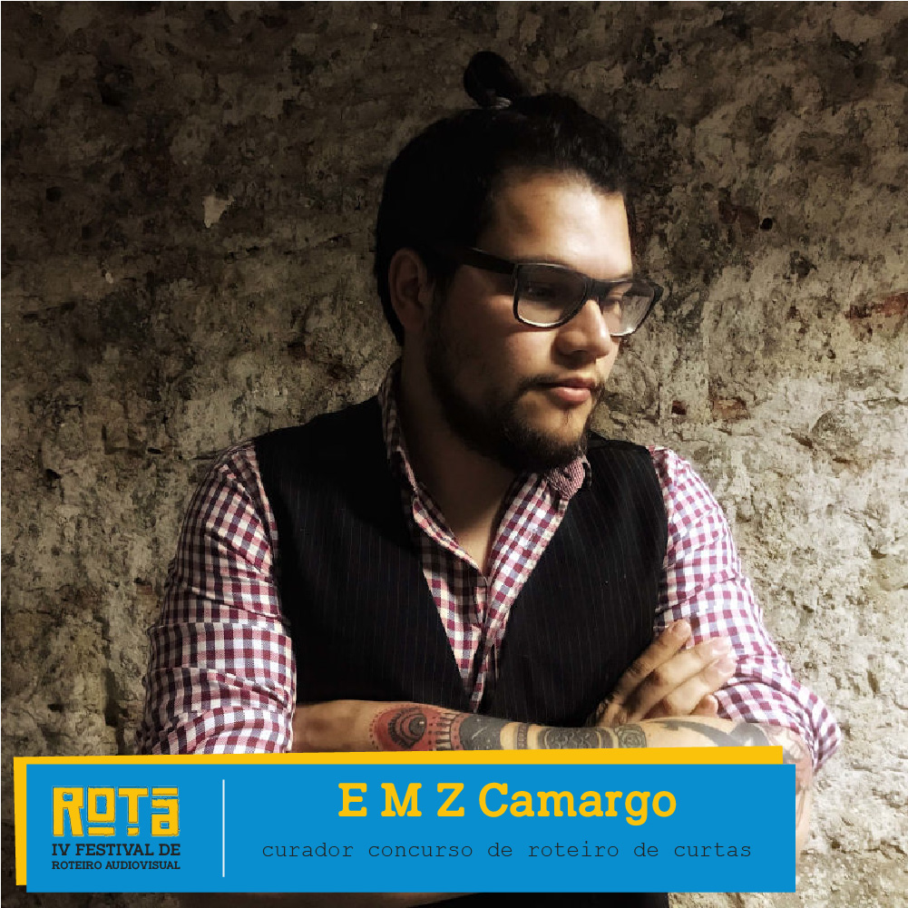 Roteirista, produtor e diretor, E. M. Z. Camargo estreou com o premiado curta-metragem “Palhaços Anônimos” (2015), realizou o documentário “Fora da Caixa” (2017), premiado no Brasil, na Argentina e na Bolívia, o curta de ficção “Luto” (2017), premiado Melhor Filme no FAM (SC), e o curta de animação “Vivi Lobo e o Quarto Mágico” (2019), que recebeu 10 prêmios nacionais e internacionais. É produtor da animação “Apneia” (2019), premiada Melhor Curta Brasileiro no Festival de Gramado (RS), que recebeu o Prêmio da Crítica no Anima Mundi (RJ) e o Prêmio Canal Brasil de Curtas no Cine PE (PE).
-
ESTÊVÃO MENEGUZZO
Curador
Está a frente da Cajamanga Filmes. Com formação e estudos em filosofia, cinema, roteiro e trabalho de corpo criou a Cajamanga com o intuito de investir no setor, produzir e dirigir entretenimento. Como diretor seu último curta metragem, Valentina, ganhou o prêmio de melhor filme e direção no Festival do Ceará e teve estreia no Festival Internacional de Edinburgh. Valentina: https://vimeo.com/217379689
-
FILIPPO PITANGA
Curador
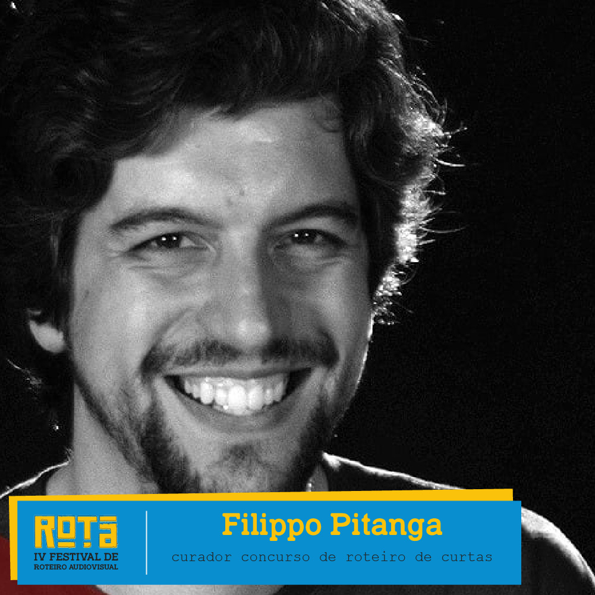 Advogado, jornalista, pós-graduando em cinema pela Estácio e mestrando pela ECO-UFRJ. Professor e membro da banca revisora de roteiros na Academia Internacional de Cinema e Sesc. Membro da Associação de Críticos de Cinema RJ – ACCRJ / FIPRESCI. Curador no CineFantasy – IFFF, do Festival Internacional Colaborativo de Audiovisual – FICA.VC e Fest Cine Pedra Azul. Curador dos Cineclubes AIC, Estação Net, Casa do Saber. Oficineiro do Cine Ceará. Colunista da Revista Fórum e Carta Capital. Membro do Podcast Cinema em Série. Editor-chefe do Almanaque Virtual. Mediador de debates do Festival de Vitória, Cine Jardim, Festival do Rio. Autor do livro "Lágrimas Entre Caixas" e de artigos em “O Último Durão - Centenário Kirk Douglas”, “John Carpenter: O Medo É Só O Começo” etc.
-
GAUTIER LEE
Curadora
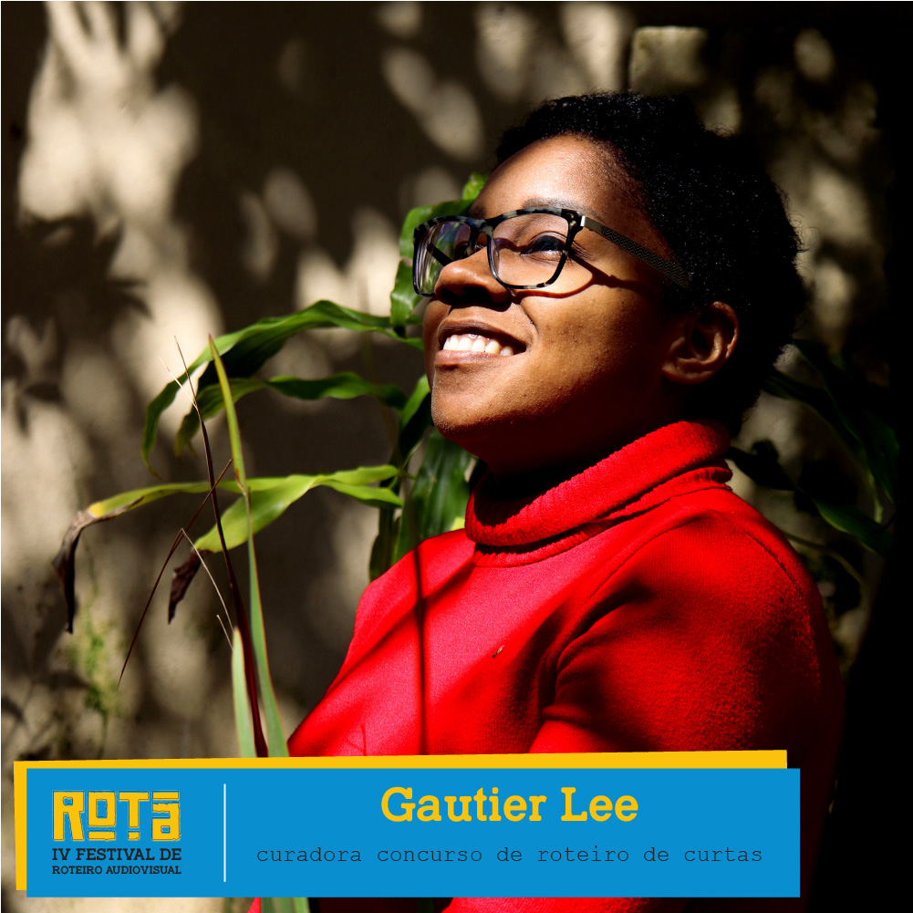 Roteirista, diretora e crítica de cinema. É membro do Black Femme Supremacy e da Organization of Black Screenwriters e membro-fundador do Coletivo Macumba Lab. Em 2019, foi semifinalista do FRAPA e vencedora do Prêmio Cabíria com o piloto da série Post Motherhood Sisters. Também participou do Laboratório de Narrativas Negras da FLUP. Em 2020, dirigiu seu segundo curta Um-Oito-Oito, escreveu o longa LOVE 101 e foi selecionada para os cursos Crafting Your Short Film e TV Writing: Crafting Your Pilot, ambos do Sundance Institute. Atualmente está desenvolvendo um curta documental, um longa de ficção e trabalha na sala de roteiro de uma série infantil de animação.
-
IAN PERLUNGIERI
Curador
Pós-graduado em Roteiro para Cinema e Televisão pela FAAP (2018). Roteiriza o curta-metragem "Ao som da chuva", que participa do 27º Festival Internacional de Curtas Metragens de São Paulo (2016). Autor do piloto de série "Super", finalista no FRAPA (2017) e do projeto "Vira-latas", contemplado em primeiro lugar pelo ProAC nº 29/2019 (Desenvolvimento de Séries). Em 2020, seu pré-projeto "Malu.com" é selecionado no edital Usina do Drama. É roteirista da 2º temporada da série animada infantil "Buzzu na Escola Intergaláctica" (veiculada na Nat Geo Kids, 2019).
-
LEONARDO BRUNO
Curador
Jornalista, escritor e roteirista. Autor de 3 livros na área de música e cultura popular: “Zeca Pagodinho – Deixa o samba me levar”, “Explode, coração – Histórias do Salgueiro” e “Cartas para Noel – Histórias da Vila Isabel”. Atua há mais de 20 anos no mercado jornalístico carioca, com passagem pela Infoglobo nas funções de editor-chefe, gerente de negócios, repórter e colunista. Concluiu a Formação de Roteiristas da “Roteiraria” e a MasterClass de Aguinaldo Silva. Teve roteiros de ficção selecionados para os laboratórios do Festival de Cinema Francês Varilux e da Escola de Cinema Darcy Ribeiro. Atualmente, desenvolve roteiros para um documentário sobre Beth Carvalho e para duas séries de não-ficção do Canal Bis.
-
LETÍCIA HELENA
Curadora
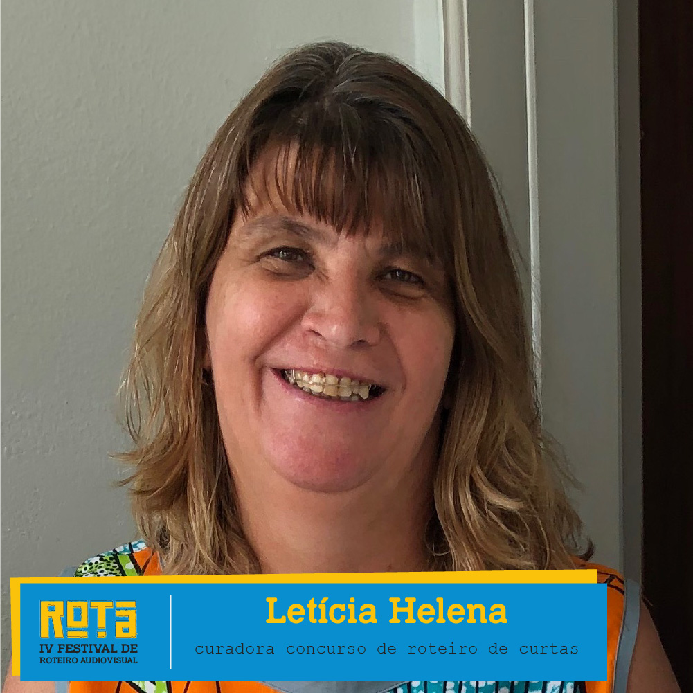 Leticia Helena é bacharel em Comunicação Social (UFF), com pós-graduação em roteiro audiovisual (Facha) e formação em roteiro na Escola de Séries. Vencedora do Prêmio de Melhor Pitchin pelo júri popular do Laboratório de Projeto de Séries do ROTA 2019, com o drama “Insano”; e do júri técnico do Laboratório de Longas-metragens do ROTA 2018, com a comédia “Pedro Américo”. Integrou a sala de roteiristas da segunda temporada da sitcom “República do Peru” (TV Brasil e Amazon). É co-roteirista dos telefilmes documentários “Nome do Pai” e “Moda sem medida”. Dirigiu, roteirizou e fez a pesquisa da websérie “Trajetórias”.
-
LÍGIA ZAPOLLA
Curadora
Roteirista e realizadora audiovisual, é mestre em Estudos Cinematográficos e Audiovisuais na Universidade Sorbonne Nouvelle - Paris 3 e pós-graduada em Roteiros ficcionais no Senac. Roteirizou e dirigiu curtas-metragens exibidos em festivais internacionais. Em 2019 foi selecionada para o Laboratório de Desenvolvimento no 19ª Goiânia Mostra Curtas e ganhou como melhor pitching com a série Malua, também selecionada para o 3º CinePitching APACI/SPCINE com o longa-metragem Afundo. É colaboradora na Imprensa Mahon, canal focado no setor audiovisual, e fundadora da Arauara Audiovisual, produtora de conteúdo autoral.
-
MAÍRA OLIVEIRA
Curadora
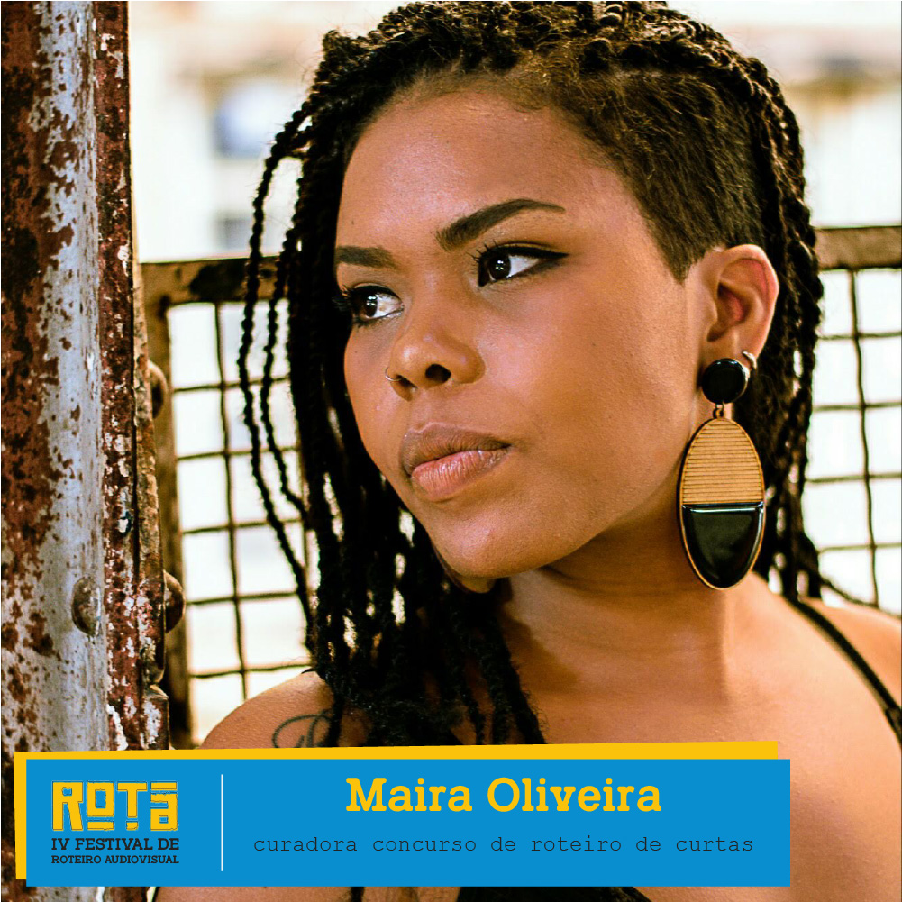 Maíra Oliveira é escritora, dramaturga e roteirista com experiência no desenvolvimento de séries ficcionais nas produtoras A Fábrica, Migdal Filmes, AfroReggae e Panorâmica. Autora do livros "Mari, a sementinha" (Ed Nandyala, 2018), "Vértice: escritas negras" (Ed. Malê, 2019, "Favela em mim" (Ed Oriki) e "Narrativas Negras" (Ed.Voo). Assina a dramaturgia dos espetáculos teatrais "Yabá: Mulheres Negras" (Direção de Luiza Loroza e Rodrigo França) e "Duas Fridas" (Direção de Gizelly de Paula, Orientação de Ana Kfouri). Em 2019, dirigiu seu primeiro filme "Encruza", selecionado para o 12º Encontro de Cinema Negro Zózimo Bulbul – Brasil, África e Caribe, disponível no SPCinePlay. Atualmente é autora roteirista da Rede Globo, além de colaborar no desenvolvimento de longa-metragem para Amazon Prime.
-
MANUELA FANTINATO
Curadora
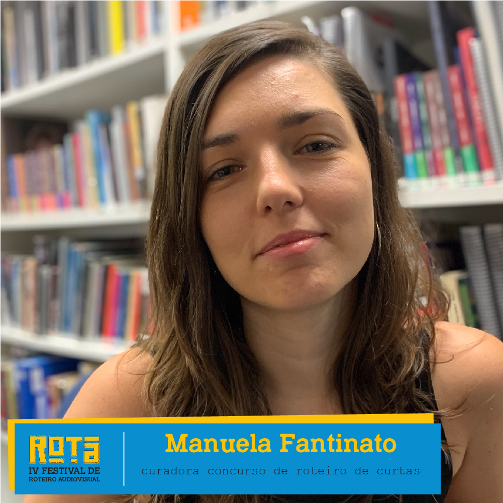 Manu Fantinato é historiadora, tem mestrado em Letras e doutorado em História Social da Cultura, com períodos como pesquisadora visitante na Universidad Nacional de Rosário e na Brown University. É pesquisadora de pós-doutorado no Departamento de Filosofia da PUC-Rio e tem se dedicado ao estudo interdisciplinar de escritas e narrativas. É, ainda, editora no Memória Globo, área de projetos especiais sobre a história e a memória do Grupo Globo, atuando na pesquisa e produção de conteúdo multiplataforma sobre e para televisão.
-
NICOLAS SANCHES
Curador
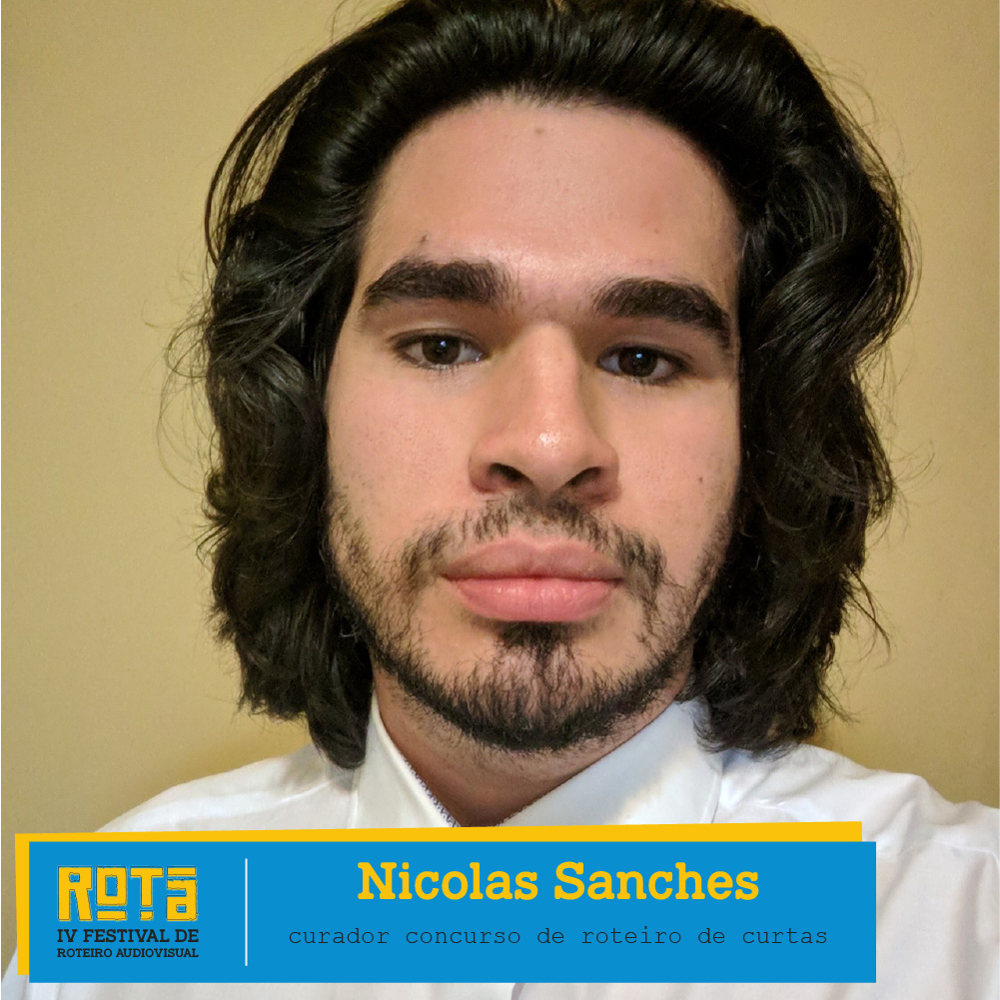 Nícolas Sanches, é bacharel em Cinema e Audiovisual pela Universidade Federal Fluminense. Na UFF, estagiou no Laboratório de Investigação Audiovisual, onde ajudou a mapear filmes lançados na América Latina. Participou da produção e divulgação do Cineclube Sala Escura sobre cinema latino americano da UFF em parceria com o MAM. Trabalhou como continuísta na Casablanca Estúdios e na produtora Massiv. Entre outros projetos, roteirizou e dirigiu o filme de conclusão de curso “Tarja Preta” (pós-produção). Em 2020, participou do edital Pontos - MIS, do Museu de Imagem e do Som.
-
RODRIGO ARAGÃO QUIRINO
Curador
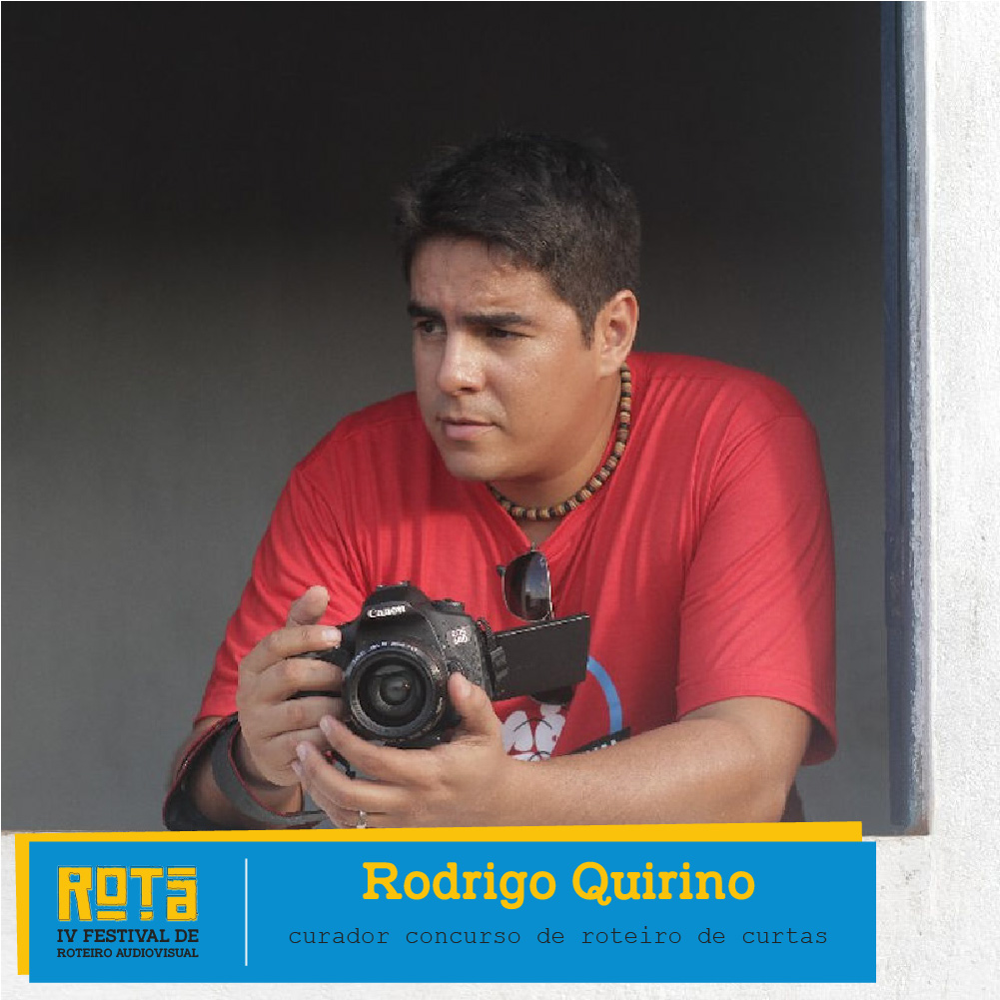 Mestre em Comunicação (PPGC/UFPB), foi professor substituto nas cadeiras de Direção e Fotografia Cinematográfica do curso de Cinema e Audiovisual da UFPB. É professor no Centro Estadual de Artes (CEARTE-PB), onde ministra os cursos de Produção Audiovisual e Roteiro Cinematográfico. Realizou a oficina Cinema de Bolso em mais de 20 municípios paraibanos, e ensinou jovens e crianças a fazerem cinema a partir do celular. Como realizador, escreveu e dirigiu os curtas Cinemameu (ficção, 2011), Saudade (ficção, 2013), Cumadre Fulorzinha (documentário, 2014) e Voltando encontrei cães que fugiam de mim (ensaio, 2016). Atuou como roteirista das séries A Invasão (TV Brasil) e Intermares, e no longa-metragem Chofre, todos ainda em desenvolvimento.
-
THAYS PANTUZA
Curadora
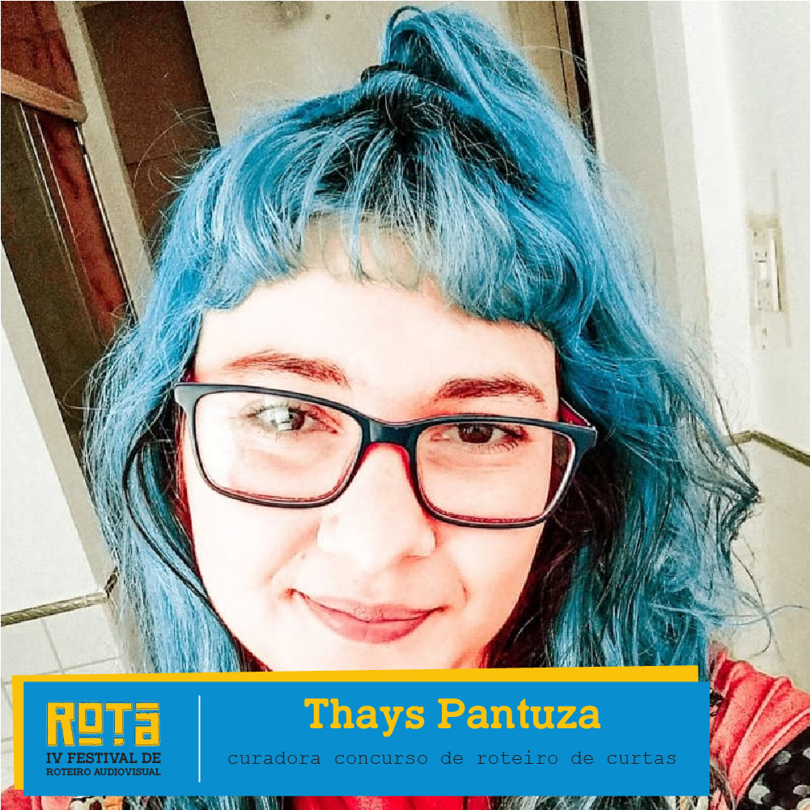 Thays Pantuza, mestranda em Tecnologias de Comunicação e Cultura (PPGCOM/UERJ), bacharel em Cinema & Audiovisual (UFF). Atualmente desenvolve uma pesquisa sobre videogames e foi professora da disciplina "Narrativas Transmidiáticas" (estágio docente, UERJ). Trabalha nas produtoras Zumbido e Portal, além de ser redatora no site Garotas Nerds. Entre outros, roteirizou, dirigiu e montou os filmes "Cícero Doc." (webdoc, 2020), "Cérebro de Corda" (ficção, 2019) e "Sem Pai, Nem Mãe" (Edital Elipse, doc, 2019). Roteirizou ainda o game “Notas de Laboratório” (visual novel, 2020). Estagiou na TV Globo (RJ) e na TV Caravelas (Ipatinga - MG) como editora de vídeo. Já ministrou diversos workshops sobre roteiro (cinema e games), escrita criativa, produção audiovisual e game design. Baterista nas horas vagas, quase-gamer, às vezes bailarina, profissão artista.
-
TOM FREITAS
Curador
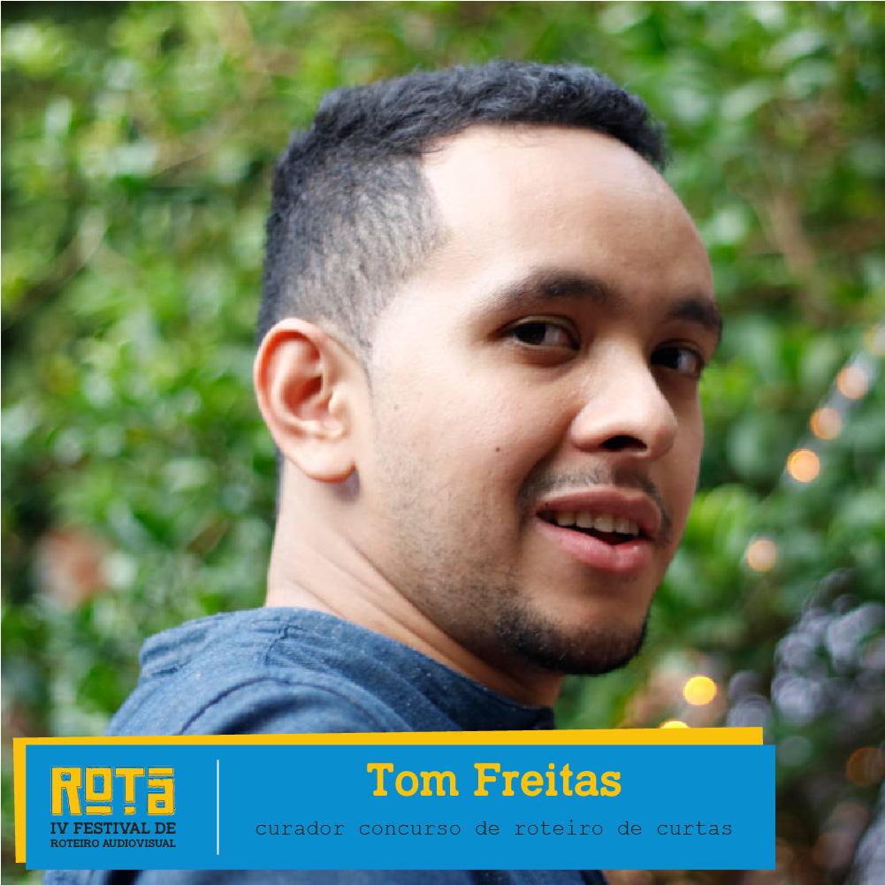 Tom Vitor de Freitas nasceu em São Paulo, Brasil, em 1993. É bacharel em Rádio, TV e Internet pela Faculdade Paulus de Tecnologia e Comunicação (São Paulo, Brasil) e mestrando em Cinema na Universidade da Beira Interior (Covilhã, Portugal). Desde o início de sua carreira acadêmica, interessou-se por estudar narrativas, sobretudo de filmes de terror. Atua como roteirista desde 2016, tendo participado de diversas produções, como a série televisiva “As Cidades Azuis” (TV Brasil, 2020), e as curtas-metragens “Astenia” (2018) e “Igor” (2020).
-
BEA GÓES
Jurada
É roteirista com 10 roteiros filmados. Iniciou seus estudos de Cinema, em 2015, em Los Angeles, na New York Film Academy, onde escreveu, dirigiu e editou três curtas-metragens. Em São Paulo, na Roteiraria, fez os cursos Formação de Roteirista Avançada e Oficina de Séries. Formada em Letras na FFLCH-USP e mestranda em Meios e Processos Audiovisuais na ECA-USP, Beatriz estuda o gênero melodramático e sua operação em serializados para streaming. É também criadora e apresentadora do Canal Narratologia, no YouTube, e escreveu o roteiro do curta-metragem Só Olhando, que acumula mais de 300 mil visualizações. Bea Também criou e escreveu a websérie de seis episódios Quarentenados, que só no piloto chegou a um milhão de visualizações em menos de 24 horas. Atualmente compõe uma sala de roteiro para uma série dramática.
-
BRUNA AGUIAR
Jurada
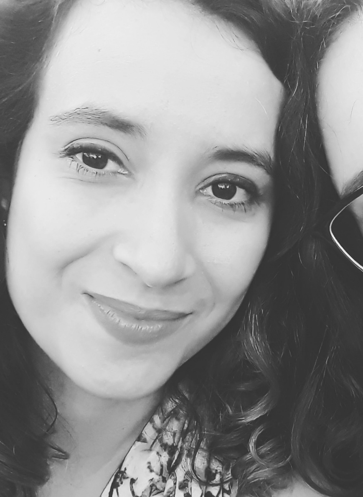 Bruna Aguiar é bacharel em Rádio e TV, pela UFRJ, mestre em Mídias Criativas pela mesma universidade e pós-graduada em Roteiro para Cinema, TV, Web e Multiplataformas, pela UVA. Profissionalmente, Bruna trabalhou em diferentes setores do segmento audiovisual. Em 2018, trabalhou como roteirista na empresa Flocks, escrevendo para programas seriados de humor, para internet. Também atuou, na produtora MP2, participando da roteirização de dois longas e como assistente de produção executiva. Atualmente, trabalha como roteirista e produtora audiovisual, na YDUQS, holding que atua, na área de educação superior. Em 2019, desempenhou as funções de assistente de direção do III Rota – Festival de Roteiro Audiovisual e coordenadora de programação do festival Cabíria Festival – Mulheres & Audiovisual. Em 2020, terminou sua dissertação de mestrado que estuda experimenta a adaptação transmidiática de contos de Machado de Assis, da literatura, para o audiovisual.
-
MYRZA MUNIZ
Jurada
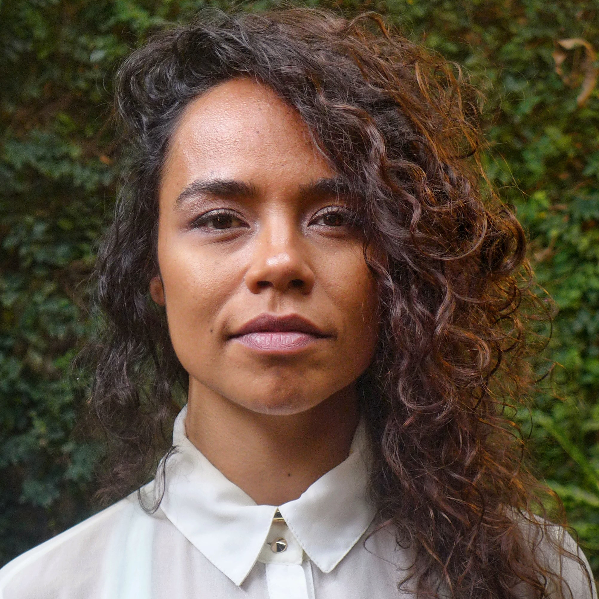 Myrza Muniz é mestre pela FGV/ESCP, roteirista pela Escola Darcy Ribeiro e Oficina de Autores da Rede Globo. Trabalhou em salas de roteiro em produtoras como Giros e Daza. Está na Conspiração desde 2019, onde assina o desenvolvimento de uma série ficcional em parceria com Paula Knudsen, e colabora como roteirista em outra série ficcional da produtora para a Amazon. Dirigiu, em 2020, o clipe da música "Racista e N1ke" (2020) que acumula mais de 1 milhão de visualizações no Youtube. Fundadora da Selvática Produções, membro da APAN, está no desenvolvimento, financiado pelo FSA, de seu primeiro longa-metragem: “A Odisséia de Obá”.
Regulamento
1) OBJETIVO
1.1 O Concurso de Roteiros de Curtas-metragens do IV ROTA – Festival de Roteiro Audiovisual tem o objetivo de promover, valorizar, qualificar e premiar roteiros de curta–metragem de ficção, escritos por estudantes e/ou iniciantes e, com isso, abrir portas para sua eventual realização.
1.1.1 Aceita-se a participação de estudantes e iniciantes desde que tenham no máximo 03 (três) roteiros de curtas-metragens filmados e exibidos em festival, mostra de cinema ou na web em plataformas de streaming, não podendo ter nenhum roteiro de longa ou série já exibido em festival, mostra de cinema ou na web em plataformas de streaming, o que deverá ser atestado através do Termo de Responsabilidade preenchido, assinado e anexado pelo concorrente no ato da inscrição.
2) DATA E LOCAL
2.1 O IV ROTA – Festival de Roteiro Audiovisual acontecerá de 25 a 29 de novembro de 2020, no modo on line, em plataformas e nas redes sociais, disponível na web. A Cerimônia de Premiação ocorrerá no dia 29 de novembro de 2020.
3) INSCRIÇÕES
3.1 A inscrição para o Concurso de Roteiros de Curtas-metragens do IV ROTA é gratuita e estará aberta a partir das 00h00 de 27 de julho de 2020 até as 23h59 de 21 de agosto de 2020, horário de Brasília.
3.2 Estão habilitados a participar estudantes e iniciantes, maiores de 18 anos, brasileiros ou naturalizados, residentes dentro ou fora do Brasil, inscritos sob pseudônimo.
3.3 Só serão aceitos roteiros escritos em português, podendo haver apenas expressões em outras línguas.
3.4 Cada concorrente poderá inscrever até 03 (três) roteiros, sendo cada roteiro correspondente a 01 (uma) inscrição.
3.5 A inscrição dar-se-á através do seguinte processo:
3.5.1 Ler o Termo de Responsabilidade e, estando de acordo, preencher por inteiro, datar, assinar, imprimir, escanear, salvar no seu computador e anexar ao Formulário de Inscrição do Concurso de Roteiros de Curtas-metragens do IV ROTA.
3.5.2 Preencher o Formulário de Inscrição do Concurso de Roteiros de Curtas-metragens do IV ROTA por completo. O não preenchimento dos campos obrigatórios e a falta de documentos anexos não permitem a conclusão da inscrição.
3.5.3 Anexar ao Formulário os seguintes documentos:
a) Termo de Responsabilidade, conforme modelo aqui, com data e assinatura do candidato,
b) RG, carteira de motorista, passaporte, carteira de trabalho ou outro documento oficial de identidade com foto (frente e verso), para a devida identificação e comprovação da maioridade do candidato,
c) Carta de Autorização do(s) coautor(es), conforme modelo aqui, escaneada, com data e assinatura do(s) mesmo(s), caso se aplique;
d) Arquivo único da obra em PDF, contendo os seguintes itens:
- a capa contendo apenas o título e o pseudônimo escolhido (não pode ser nome de nascimento, nem social, nem artístico, devendo não ter referência ao autor),
- o roteiro de até 20 (vinte) páginas fora a capa, seguindo formatação profissional (Padrão Master Scenes),
- a sinopse de até 01 (uma) página,
- o perfil dos personagens principais de até 01 (uma) página,
O arquivo deve ter no máximo 23 páginas: a capa, o roteiro [com até 20 (vinte) páginas], a sinopse e o perfil de personagens. Qualquer arquivo com mais de 23 páginas será automaticamente desclassificado.
O arquivo não pode conter referência ao nome e/ou contato do(s) autor(es), como por exemplo telefone, email, endereço, em nenhuma das páginas, cabeçalhos ou rodapés, para garantir o sigilo da autoria.
3.5.4 Não será aceita nenhuma documentação incompleta e/ou enviada após o encerramento do prazo de inscrições.
3.5.5 O ROTA não se responsabiliza por qualquer situação decorrente da ausência de registro na Biblioteca Nacional, conforme consta no Termo de Responsabilidade do(s) autor(es).
3.5.6 A organização do IV ROTA – Festival de Roteiro Audiovisual também se reserva o direito de prorrogar o prazo de inscrições, conforme julgue adequado, anunciando tal informação em seus canais de comunicação.
3.5.7 O IV ROTA – Festival de Roteiro de Audiovisual não se responsabiliza por quaisquer despesas referentes à participação de roteiristas neste Concurso.
3.5.8 O IV ROTA – Festival de Roteiro Audiovisual não se responsabiliza pelas consequências de quaisquer informações inverídicas que venham a ser apresentadas por roteiristas participantes deste Concurso de Roteiros de Curtas-metragens do IV ROTA, reservando-se a prerrogativa de desclassificar, a qualquer momento, os responsáveis por quaisquer infrações ao presente Regulamento.
3.5.9 Ao inscrever seu(s) roteiro(s), o roteirista afirma anuência e concordância com os termos constantes deste Regulamento, afirmando ainda que todas as informações fornecidas à organização do IV ROTA – Festival de Roteiro Audiovisual por ocasião dessa inscrição são verdadeiras.
4) PROCESSO SELETIVO
4.1 Habilitação: nesta etapa serão verificadas se todas as informações e documentos obrigatórios foram enviados corretamente, bem como se os roteiros inscritos foram apresentados de acordo com a formatação profissional (Padrão Master Scenes – conforme indicação aqui), no limite de páginas que consta na alínea “a” do item 3.5.3. Se estiver habilitado, o inscrito receberá um e-mail confirmando a habilitação no máximo em até 7 dias após o final do período de inscrições.
4.1.1 Apenas os projetos habilitados passarão para a etapa de seleção e serão avaliados.
4.2 Seleção: realizada em duas etapas, terá na primeira delas uma Comissão de Curadores, que irá eleger em torno de 30 (trinta) roteiros semifinalistas. Na segunda etapa de seleção, um Júri elegerá 05 (cinco) roteiros finalistas e dentre eles os roteiros premiados em 03 (três) categorias.
4.2.1 O Júri e a Curadoria serão compostos por profissionais atuantes no mercado audiovisual e no meio acadêmico, escolhidos pela organização do IV ROTA – Festival de Roteiro Audiovisual.
4.3 Os roteiros semifinalistas e os finalistas serão divulgados no site do ROTA, assim como nas páginas do ROTA nas redes sociais (Facebook, Instagram e Twitter), conforme cronograma abaixo:
4.3.1 Dia 11 de outubro de 2020 – divulgação da lista dos semifinalistas,
4.3.2 Dia 15 de novembro de 2020 – divulgação da lista dos finalistas,
4.3.3 Dia 29 de novembro de 2020 – premiação dos vencedores das 03 (três) categorias (melhor roteiro, melhor personagem e melhor diálogo), e da melhor protagonista feminina (Certificado Cabíria), durante a Cerimônia de Encerramento.
4.3.4 Dia 30 de novembro de 2020 – divulgação do resultado final no site do ROTA e nas redes sociais.
4.4 A escolha dos roteiros vencedores do Concurso de Roteiros de Curtas-metragens do IV ROTA, bem como dos roteiros finalistas e semifinalistas, será de exclusiva responsabilidade da Curadoria e do Júri do Concurso. Estas decisões serão soberanas e irrecorríveis.
4.5 A organização do IV ROTA – Festival de Roteiro Audiovisual reserva-se o direito de selecionar e premiar, ou não, quaisquer roteiros, conservando para si todas as prerrogativas referentes a esses processos de seleção, inclusive a de não premiar ou selecionar os roteiros para quaisquer prêmios.
5) CRITÉRIOS DE AVALIAÇÃO
5.1 Critérios que serão utilizados na avaliação dos roteiros:
a) Qualidade da estrutura narrativa;
b) Qualidade da trama;
c) Qualidade da construção de personagens;
d) Qualidade da construção dos diálogos;
e) Originalidade.
IMPORTANTE: qualquer roteiro que apresente conteúdo com preconceito ou que incite à violência estará sujeito a imediata desclassificação.
5.2 A Comissão da Curadoria será orientada a utilizar uma pontuação de 0 a 2,5 para cada um dos critérios de avaliação, estipulados neste Regulamento, com exceção do item "d" Originalidade, que receberá 0 (zero) ou 2.
6) PREMIAÇÃO
6.1 Os roteiros finalistas concorrerão a prêmios pelas 03 (três) categorias:
a) Melhor Roteiro: troféu e parecer resumido do Júri.
b) Melhor Diálogo: troféu e parecer resumido do Júri.
c) Melhor Personagem: troféu e parecer resumido do Júri.
6.2 O Prêmio ROTA/Cabíria oferece também o Certificado Cabíria para o roteiro com a Melhor Protagonista Feminina em Curta-metragem.
6.3 Outras premiações paralelas poderão ser criadas e serão divulgadas através do site e das páginas do ROTA no Facebook, Instagram e Twitter.
7) CONTRAPARTIDA
7.1 Como contrapartida é exigida a inclusão da logomarca do ROTA nos créditos de abertura e de encerramento do filme que venha a ser produzido a partir de um roteiro premiado, assim como a inserção da mesma logomarca nas edições impressas de roteiros premiados que venham a ser publicados, comercialmente ou não.
8) CONTATOS
8.1 Dúvidas decorrentes do presente regulamento deverão ser encaminhadas ao e-mail: rotaconcurso2020@gmail.com
8.2 Para acompanhar as notícias do ROTA acesse:
Facebook: https://www.facebook.com/rotafestival/
Site: http://rotafestival.com
Instagram: @rotafestival
Twitter: @rotafestival
Ver mais...
Fechar
Inscrição
Inscrições abertas de 27 de julho a 21 de agosto de 2020!